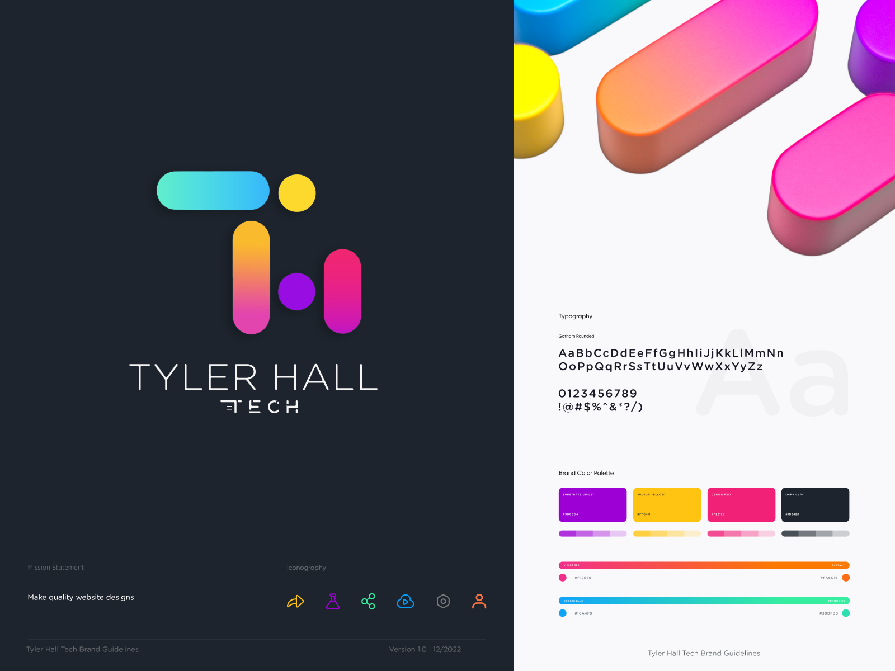
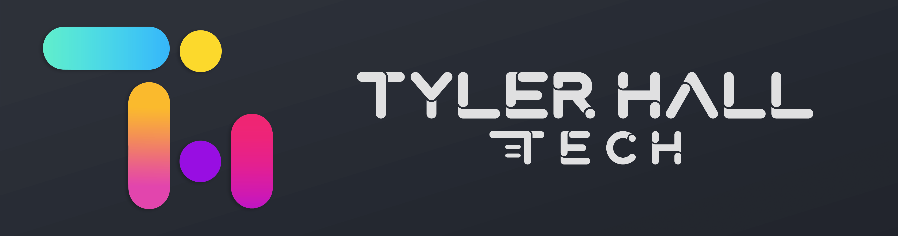

The new & best way to sideload your favorite games and apps to your Non-Jailbroken iOS device, or Apple Silicon Mac!
Sideloadly Features
- No Jailbreak required! Sideloadly was built for Non-Jailbroken devices in mind
- Ability to sideload apps with a free or paid Apple Developer account
- Ability to save your credentials for easy & quick sideloading
- Supports iOS 7 and all the way up to iOS 16.4+
- Wi-Fi Sideloading! Sideload/Install apps without needing to connect your device via USB!
- Automatic app refreshing. Sideloadly will automatically refresh your apps every few days to prevent them from expiring! NEW!
- Apple Silicon Sideloading Support! Use Sideloadly to install (unsupported) iOS apps to your M1/M2 Pro/Max/Ultra Mac! Works with Free/Paid Apple IDs & SIP enabled
- Drag & drop .IPA support
- Change minimum iOS version required to run the app
- Remove app/IPA restriction on supported devices
- Change the app name that will appear on your home screen
- Change the app icon that will appear on your home screen NEW!
- Change the application bundle ID to allow multiple/duplicate app installs
- Multiple install options. Apple ID Sideload (default), Normal Install, Ad-hoc sign & export tweaked IPA! Each feature is explained when hovered over.
- App file sharing option. Allows you to access the sideloaded app's Documents on your PC & via the iOS Files app
- Remove app extensions (PlugIns) option
- URI Scheme to easily download and sideload an IPA directly from the web
- Installation logs for easier troubleshooting
- Device System Logs viewer for troubleshooting general device or app installation issues
- Ability to hide sensitive information to make it easier to take screenshots, record tutorial videos or share your logs for troubleshooting
- Ability to inject multiple .dylib, .deb, .framework & .bundle to your IPA. Including Cydia Substrate & Substitute framework support for Non-Jailbroken!
- Light/Dark mode for macOS
- More features to be added based on community suggestions
Important Windows Tasks
For Windows, please make sure you have the web version of iTunes & iCloud installed. If you do not, install the non Microsoft Store version from: x64 - x32
iCloud web Apple download link.
Download Sideloadly
Windows 64-bit Download — Windows 32-bit Download
(Requires Windows 7 or higher)
macOS Download
(Requires macOS 10.12 Sierra and higher. Apple Silicon Mac M1/M2 Pro/Max/Ultra Sideloading Supported)
Screenshots


(click on the image for the full size)
Sideloadly Frequently Asked Questions & Answers
Q: What information does Sideloadly transmit when connecting to the Anisette server?
A: We use our server for Anisette data only. This data is only only transmitted if using the "Remote Anisette" option under Sideloadly's Advanced Options. When using remote anisette, here is the exhaustive list of information our server can see:
- Your IP address
- Your OS (win32, win64 or macOS)
- Sideloadly version.
That's all. We don't share this information with anyone, and it is stored for a limited time for debugging purposes only. Your Apple ID & Password is only sent to Apple servers.
Q: How do I enable Wi-Fi sideloading via Sideloadly?
A: To enable Wi-Fi sideloading your iDevice, please make sure your computer & iOS device are connected to the same network. Then you will need to initially connect your device via USB and follow these instructions depending on your OS:
Windows: Open iTunes > Connected Device > Summary > Options > Enable "Sync with this iDevice over Wi-Fi" option > Sync & Done.
Latest macOS: Finder > Select your iDevice under 'Locations' > General > Enable "Show this iDevice when on Wi-Fi" option > Sync & Done.
Older macOS: Open iTunes > Connected Device > Summary > Options > Enable "Sync with this iDevice over Wi-Fi" option > Sync & Done.
In some cases, if Sideloadly is not detecting your device wirelessly, you may need to open iTunes. You also need to have your iDevice screen on for it to be detected.
Q: How do I enable the Sideloadly Mail Plug-in on macOS?
A: Please open the macOS Mail App and then open Preferences. If you need to login to an email account, you can simply click on the Other option and provide some random information to be able to gain access to Mail's preferences. Once on the General Preferences window, at the bottom you will see the option to "Manage Plug-ins", click on it and tick/enable the SideloadlyPlugin.mailbundle and then click on Apply and Restart Mail.
Q: How long will I be able to use the sideloaded app?
A: A normal & free Apple Developer account only allows the app to function for 7 days. After 7 days you can sideload it again using the same Apple ID, just make sure your progress is backed up. Apps signed with a paid Apple Developer Account can last up to 1 year.
Q: Developer Mode Required. How do I enable developer mode on my iOS device to sideload apps?
A: Since iOS 16+, Apple now requires users to enable "Developer Mode" on their devices in order to allow the sideloading & installation of apps outside of the iOS App Store. To enable Developer Mode go to Settings > Privacy & Security on the iOS device. Scroll down to the Developer Mode list item and navigate into it and enable the developer mode switch.
Q: How can I save or load my in-game progress?
A: You need to make sure your game progress is being synced over Game Center, Facebook, Twitter or Google+. If the game saves it's progress locally, you will need to install the IPA overwriting the one you already have installed. In order to overwrite, the modified IPA must have the same bundle ID and you must use the same Apple ID when sideloading. See below for more information.
Q: Can I overwrite my current app without removing it?
A: Yes, it is possible. In order to accomplish this, you need to sideload the IPA with the same Apple ID that your previously sideloaded app is with. If you previously manually set a custom bundle ID, you need to use the same ID again.
Q: How many apps can I sideload?
A: iOS 7, 8, 9: You can sideload as many apps as you like on your device. However your free developer account has limitations but you can easily bypass those limitations by creating a new Apple ID. On iOS 10, 11, 12, 13, 14, 15, 16 and higher, you can only have 3 sideloaded apps installed on your device at the same time. Apple has limited this and will not allow any more for free Apple Developer accounts. A paid Apple Developer Account does not have such limitations.
Q: Why can't I restore my Game Center game progress after sideloading?
A: With the latest iOS versions, Apple has prevented users on free Apple accounts from sideloading apps that have the same bundle ID as an App Store app. In order to sideload on the latest iOS versions, we are forced to set a unique bundle ID and in doing so, Game Center does not recognize the app therefore will not prompt you to restore your save.
Q: Sideloadly does not show my device?
A: If this happens, try rebooting your PC, open up iTunes while your device is connected & make sure you tap on 'Trust' from the popup on your iDevice. Then open Sideloadly. If this does not help, connect your device and make sure it is recognized by your PC/iTunes then open Sideloadly. You can also try completely uninstalling then reinstalling iTunes. Also, make sure you are using the web version of iTunes.
Q: How do I trust the app? How do I fix "Untrusted Developer"?
A: To trust the app after sideloading, you will need to go to Settings -> General -> Profiles/VPN & Device Management and once there, tap on the email you used to sideload then trust it.
Q: Does Sideloadly support iOS 7, 8, 9, 10, 11, 12, 13, 14, 15, 16?
A: Sideloadly should support iOS 7 up to iOS 16 (and other iOS versions in the future). If you experience any iOS specific issues, do let us know so we can investigate!
Q: What kind of .dylibs or .debs can I add to my IPA? App crashes on launch after injecting dylib/deb/framework.
A: All dylib/deb/framework files are supported by Sideloadly, however, some of these files are specifically made for Jailbroken and will causes crashes when sideloaded on non-jailbroken devices. Sideloadly will automatically attempt to update the injected files to support non-jailbroken devices, but it won't always 100% work due to how they are made.
Q: Does Sideloadly support Apple Silicon M1/M2 Mac?
A: Yes! Sideloadly has been updated to support Apple Silicon MacBook, Mac Minis and iMacs. When Sideloadly is ran on an Apple Silicon device, it will detect and display the Mac itself on the devices list to install the .IPA to. This has been tested by us on Big Sur, Monterey & Ventura.
Q: Does Sideloadly work on Apple Silicon M1/M2 Mac with SIP Enabled?
A: Yes! Sideloadly was tested & working with SIP enabled Mac Mini. It is currently uncertain about SIP disabled.
Q: Why am I receiving no permission error when opening my sideloaded M1/M2 iOS App?
A: This issue happens if the IPA you have sideloaded was encrypted (downloaded through iTunes or straight from your device). In order to fix this, you need to sideload the decrypted version of the IPA.
Q: How can I use an app-specific Password?
A: App-specific passwords partially works via Sideloadly. App-specific password can only work if you are using a paid Apple Developer ID with anisette option disabled.
Can I make legit In-App Purchases on sideloaded apps?
Unfortunately, no. Apple prevents In-App Purchases from working on sideloaded/enterprise installed apps. If you want to support the developers, install the original App Store version and make In-App Purchases there.
Q: Which Windows version does Sideloadly support?
A: Sideloadly should work on Windows 7, 8, 10 & 11. For the best results, Windows 10 or higher is recommended.
Q: Which macOS version does Sideloadly support?
A: Sideloadly should work on macOS 10.12 Sierra and higher. For the best results, macOS Catalina, Big Sur, Monterey, Ventura & higher is recommended.
Q: "Sideloadly" wants access to control "System Events"?
A: This access is requested for Sideloadly to be able to automatically launch and close/minimize the macOS Mail app which is required for it to be open when sideloading. You can disallow access to this request, but in doing so you will have to make sure the Mail app is opened when launching Sideloadly.
Q: The app/IPA was sideloaded successfully, but no app or icon is appearing on my home screen?
A: If this happens to you, please reboot your device as that usually helps.
Q: How do I fix "error ‘machineName’"?
A: A few members have reported that changing your computer's name helps. Search for “computer name” or “machine name” from the start menu.
Q: How do I fix "Your maximum App ID limit has been reached. You may create up to 10 App IDs every 7 days."?
A: This is a limitation set by Apple on free developer accounts. To fix this, you can either wait a few days and try again, or use another Apple ID to sideload.
Q: How do I fix "This device has reached the maximum number of installed apps using a free developer profile"?
A: This is a limitation set by Apple on free developer accounts. If you are using a free Apple Developer account, you can only have 3 sideloaded apps installed on your device at the same time.
Q: How do I fix "Your session has expired. Please log in." or "This action could not be completed due to possible environment mismatch."?
A: To resolve this issue, please see this tutorial posted on the Sideloadly subreddit.
Q: How do I fix "Call to lockdownd_client_new_with_handshake failed: LOCKDOWN_E_INVALID_HOST_ID" error?
A: Please make sure you have trusted your PC from your device when asked. You can try rebooting your PC while keeping the device plugged in. On latest macOS, open Finder -> Locations -> iDevice -> Trust. Or open iTunes and sync your device.
Q: How do I fix "Call to np_client_new failed: NP_E_CONN_FAILED" error?
A: Please make sure you uninstall the Microsoft Store version of iTunes and install the normal/web version (x64 - x32). After that, connect your device and sync it then open Sideloadly.
Q: How do I fix "Call to afc_file_close failed: AFC_E_MUX_ERROR" error?
A: Please make sure you uninstall the Microsoft Store version of iTunes and install the normal/web version (x64 - x32). After that, connect your device and sync it then open Sideloadly.
Q: How do I fix "No space left on device" error?
A: This error usually means there is no space left on your hard drive on your computer. Please check and make sure there is enough space on your computer for Sideloadly to work.
Q: How do I fix "Failed to obtain anisette: 500 INTERNAL SERVER ERROR"
A: This is a temporary issue caused by a server error when using the Remote Anisette option. If you are receiving this message, please try again later or use the Local Anisette option under Sideloadly's Advanced Settings.
Q: How do I fix "Invalid argument /path/to/app.ipa"
A: This happens when the downloaded .IPA file has been quarantined or deleted by your Antivirus. Or may be in use by another process on your computer.
Q: How do I fix "Sideloadly cannot be opened because the developer cannot be verified" on my macOS?
A: If you are receiving this message, you will need to head over to System Preferences -> Security & Privacy and you should have the option to "Open Anyway" for Sideloadly.
Q: How do I fix "The identity used to sign the executable is no longer valid."?
A: This message means that the time & date on your computer & iOS device may be incorrect. Please use the correct & current time on your computer and iOS device and try again.
Q: How do I fix "A valid provisioning profile for this executable was not found."?
A: We believe this message is also tied to the date & time of your devices. Please use the correct & current time on your computer and iOS device and try again.
Q: How do I fix "DeviceNotSupportedByThinning (Device iPhone/iPadx,y not in Supported Devices list"?
A: This message means that the device model you are using is not supported by this .IPA. However, there is a workaround if you enable 'Remove limitation on supported devices' under advanced options in Sideloadly then retry.
Q: How do I fix "IncorrectArchitecture (Failed to find matching arch for 64-bit Mach-O input file)"?
A: This message means that the .IPA file you are attempting to install does not support your device. There is no workaround for this issue.
Q: How do I fix "Installation failed: 0 InstallProhibited"?
A: This message means that device you are trying to install the app to is supervised and does not have permission to install new applications. To fix this, go to Settings > Screen Time > Content & Privacy Restrictions > iTunes & App Store Purchases > Installing Apps > Allow.
Q: How do I fix "no default case defined"?
A: This message usually means that a file inside your .IPA is corrupted, or in an incorrect format. You will need to remove the corrupted file from the IPA before proceeding. In most cases presented to us, the file seems to be /AppName.app/ftm.dylib.
Q: How do I fix "The version of cryptography does not match the loaded shared object. This can happen if you have multiple copies of cryptography installed in your Python path. Please try creating a new virtual environment to resolve this issue."?
A: If you are receiving this message, please reinstall Sideloadly from the latest links.
v0.8
- Initial release
v0.9.2
- Detect iOS version and toggle bundle ID mangling if necessary
- Added debugging output in attempt to fix "device already registered" issue
- Fixes an issue which prevented people from opening Sideloadly after updating
Small improvements and bug fixes
v0.10
- Added URI Schemes so now you can easily download and sideload an .IPA.
- Fixed an update loop issue
- Minor bug fixes and improvements
v0.11
- Added Jailbreak-only option to install IPAs onto your Jailbroken device without needing an Apple ID. AppSync is required from Cydia
- Added UIFileSharingEnabled option to allow users to access the sideloaded app's (documents) data
- Added debugging data to troubleshoot "insufficient data" issue some users are reporting
- Minor bug fixes and improvement
v0.12
- Added support for iOS 14 BETA 3+
- Fixed an error with provisioning profiles
- Fixed an issue which would prevent sideloading apps which special characters in their names
- Allow choosing team ID if there are several of them
- Workaround fix for LOCKDOWN_E_MUX_ERROR on large .IPA file
v0.13
- Sideloadly now detects devices whenever it is plugged in without having to restart
- Fixed an issue where changing bundle ID on the latest versions of iOS would fail to sideload
- Fixed charmap & encoding errors on some IPAs
- Fixed an issue which prevented devices on specific iOS versions from sideloading
- Fixed an issue where Sideloadly would not sign all dylibs
- On LOCKDOWN_E_PASSWORD_PROTECTED message, Sideloadly will now wait until you unlock your device then proceed with the installation
v0.14
- Fixed an error which would prevent signing due to the file being used by another process
- Retries now only happens on LOCKDOWN_E_MUX_ERROR errors
- Fixed an empty error message that may affect users
- Fixed the apps crashing when installed using Jailbreak-only option
- Fixed a MemoryError issue on huge executables
- Added Windows 32-bit support
- Removed/Cleaned up unused code decreasing overall bundle size
v0.14.1
- Retry IPA download several times on failure
- Better error reporting
v0.14.6
- Support hashed URL format
- Don't retry download if the target is invalid
- Report details when anisette data obtaining fails
v0.14.8
- Make sure we don't leave temporary files on the device
- Support no-sign mode for jailbroken devices
- Don't fail if the IPA had no signature
v0.14.9
- Improvements made to avoid MemoryError
v0.15
- Fix zero-padding logic which caused invalid signature in some rare cases
v0.15.1
- More fixes to zero padding
- Show error details when anisette obtaining fails
v0.15.2
- Some optimizations to memory usage
- Avoid leaving old files in staging directory on iDevice
v0.15.3
- Fixup staging directory related crash
- Debugging AssertionError
- More memory optimizations
- More padding/sizing fixes
v0.15.7
- Fixed a crash that occurred on specific type of dylib
- Account for changes in Apple's phone number verification page
- Include Guru Meditation codes in exceptions
v0.15.8
- Include IPA file information in the log
- Include Sideloadly version in log
- Retry download from scratch if file turned out to be too large
- Fix a crash that occurred when downloading via Sideloadly
- Make sure to not leave temporary directories on crash
0.15.9
- Don't crash when trying to revoke oldest certificate
- Switch to 64-bit version to workaround remaining MemoryError
0.16.1
- Fix update URL
- Added support for iOS 14.2
0.17.2
- Sideloadly for macOS is now released!
- Fixed an issue which caused apps to recently crash
- Fixed `machineName` error
- Fixed "There is no 'ios' certificate with serial number" error
- Properly handle percentages in logs
- Improvements made to 2FA
- UI Improvements
- General bug fixes
0.17.3
- Fixes an issue with unc0ver Jailbreak
0.18.0
- Added the option to remove App PlugIns before sideloading
- Improved the Anisette option so now it's less confusing
- Added support for older macOS versions
- Fixed an issue where Sideloadly URL scheme would not start downloading when Sideloadly was opened
0.19.0
- Added a new feature to display real time system logs.
- Sideloadly now displays the device name and iOS version next to UDID
- Added a copy button next to the device that copies the active UDID
- Bundle ID mangling will now be disabled if anisette option is unticked
- Fixed an issue where users were unable to login if uppercase characters were used in their Apple ID
- Fixed an issue which caused some filenames to overlap when displayed
- Fixed an issue where some users would have a corrupted sessions file
- Added a placeholder on the Apple ID input to prevent confusion
0.20.1
- Sideloadly now supports sideloading non-supported apps to your Mac with Apple M1! If you use Sideloadly on your M1, you will get a new option to install the iOS app to your Mac!
- Two Factor Authentication now has been fully implemented. This includes SMS 2FA & allows you to re-enter your code.
0.20.2
- Sideloadly now supports iOS 15!
0.20.4
- Sideloadly now has a new feature which allows you to hide sensitive information so you can easily share your logs or take screenshots and record videos without worry!
- Improved support for older iDevices running iOS 8 and lower. Fixed MISAGENT_E_REQUEST_FAILED issue.
- Improved support for M1 Mac sideloading.
- Fixed permissions issue on M1 sideloaded apps.
0.21
- New install options: Apple ID Sideload, Normal Install, Ad-hoc Sign & Install. Each option has been explained when hovered over.
- Sideloadly can now inject .dylib(s), .deb(s), .framework(s) & .bundle(s) to your IPA. You can even drag & drop to the injection field!
- Sideloadly will also update the injected .dylibs/.debs to try and support Non-Jailbroken devices.
- In addition to the above, we also now provide a default option to inject CydiaSubstrate.framework which is required by most tweaks, and another option for injecting Substitute. Sideloadly also supports Settings.bundle.
0.21.1
- Fixed "string index out of range" issue reported by users.
- Fixed an issue where some .deb files were not properly recognized.
- Fixed an issue where on-device installations would fail on some apps (APIInternalError)
- Other minor bug fixes and improvements
0.22.0
- User interface improvements
- Sideloadly will now detect & notify you if the app you're sideloading is undecrypted
- Sideloadly will now retry downloads 3 times before it stops
- Fixed "pem_bytes does not appear to contain PEM-encoded data - no BEGIN/END combination found" issue.
- Fixed an issue where Sideloadly would hang for a period of time before continuing on certain IPAs
- Fixed "Backend object does not implement RSABackend" issue
- Fixed an issue where Sideloadly would crash when using certain options with no device connected
- Multiple macOS fixes were made to make Sideloadly more reliable
0.22.1
- Sideloadly now fully supports iOS 15.1!
- Improved the detection of decrypted/undecrypted apps.
- Improved the hide functionality which would show your email if you tried editing it.
- Other minor bug fixes and improvements.
0.23.0
- Sideloadly now supports Wi-Fi sideloading. Frequently Asked Questions has been updated with a simple guide on how to setup this new feature!
- Improved handing of new device connections & detections.
- Added an option to re-pair your iOS device via USB. This may help troubleshoot certain issues users are experiencing.
- Fixed a layout issue pertaining the injection feature on macOS.
- Fixed an issue where machine_id.txt file would get corrupted.
- Potentially fixed an issue which prevented users from sideloading using an organization account.
0.23.2
- New feature to resume/retry sideloading if the Wi-Fi/USB device was unexpectedly disconnected.
- Improved the handling of disconnected devices and new device connections so now it's more reliable and less confusing.
- Updated the bundle ID input field so it's less confusing. The logs will also provide information depending on input.
- Updated the "Uploading..." message to tell the user to keep their screen ON when sideloading via Wi-Fi.
- Sideloadly will now autofill more inputs inside advanced options.
- Fixed an issue that would cause Sideloadly to crash when a device is connected. This mainly affected macOS.
- Fixed a bug which prevented users from being able to start sideloading on a freshly installed version of Sideloadly. The workaround to this was to use the hide/unhide feature.
- Fixed an issue where Apple's proprietary PNG compressed images wouldn't display when the IPA is selected.
- Minor UI updates and bug fixes
0.24.0
- Updated Sideloadly's libraries to latest versions.
- If a USB device is connected on launch, we will now automatically select that.
- Improvements were made to troubleshoot the "Failed to init layer 2" issue that some macOS users are experiencing.
- Improvements were made to Anisette service so it is now more reliable.
- Disabled the removal of profiles before sideloading.
- Minor other bug fixes and UI improvements.
0.25.0
- Pushed a (temporary) fix regarding the failed Apple ID logins some users were experiencing.
- Added a new feature to Sideloadly which allows the user to simply export the tweaked/modified IPA after advanced options configuration.
- Improved the Apple ID input box handling.
- General improvements & bug fixes.
0.26.0
- Sideloadly now has the ability to grab anisette data locally so it no longer needs to connect with our server for every sideload! This will fix the "Unable to login" issue some users have been experiencing. This is currently only available for Windows with the macOS version being worked on and released soon.
- Sideloadly will support 3 different ways to grab the required data for sideloading:
Local Anisette which is the default option now and uses your computer's local data for sideloading.
Remote Anisette which will use our server to grab the necessary data for sideloading.
No Anisette which is useful if you are using an Apple ID enrolled in the Apple Developer Program.
- The "Export" option in Sideloadly now works even with no devices plugged in.
- Fixed an issue with the Cydia Substrate framework which would cause other apps to crash.
- Fixed a recently introduced issue with the Ad-hoc sign option.
- Added additional debugging to help us fix the "ascii codec" issue some users are experiencing.
0.26.3
- Sideloadly for macOS now supports local anisette. This will fix the login issues some users have been experiencing. Please note that this is the initial release so there may be bugs which we will definitely resolve.
- Sideloadly will support the 3 different ways of obtaining the required data for sideloading: Local, Remote & No Anisette. We also require users to install the Sideloadly Mail plugin in order to grab the necessary data required for sideloading. Additionally, if a user has the AltStore Mail plugin installed, we will attempt to use that instead.
- Updated "Enable UIFileSharing" option to also include LSSupportsOpeningDocumentsInPlace.
- Fixed an issue where local anisette setup would fail in certain environments.
- Various minor improvements and bug fixes.
0.26.5
- Further improvements have been made to local anisette option for macOS making it more reliable. Mail app will automatically open with Sideloadly. This is normal and a requirement for local anisette to work.
- Sideloadly now has the ability to update the Mail Plug-In if required in the future.
- Fixed an issue where modified and exported Sideloadly IPAs would cause issues when signing them with other services.
- Fixed an issue with IPA exporting on Apple Silicon Macs.
- Fixed a crash issue that occurred on older macOS versions such as Sierra & High Sierra.
- Various other bug fixes and improvements.
0.27.0
- Added a new feature under tweak injection called "Sideload Spoofer". This was recently added as some applications would prevent you from logging in when sideloaded. This feature is recommended to use, but it is not enabled by default.
- Fixed an issue that appeared on iOS 16 & 16.1 where some apps weren't able to be refreshed. You will need to uninstall and reinstall the app to continue refreshing it.
- Improved the handling of how executables are signed.
- Hide sensitive information feature has been improved and now stays on during Sideloadly launch.
- Added @Sideloadly Twitter & r/Sideloadly Reddit so users can keep up with updates, announcements and support.
- Fixed an issue where bundles were not selectable on macOS. - Various other bug fixes and improvements.
0.28.0
- Improvements have been made to Sideloadly's tweak injection feature. It will now support additional tweaks & frameworks.
- We've updated text & descriptions in Sideloadly to be clear & understandable.
- Sideloadly's hide feature now also hides user account name in logs.
- Sideload Spoofer has been updated to support even more apps as requested by users.
- Added a message informing users when a device could not be detected.
- Fixed an issue where some anisette data would not be parsed properly leading to a "Bad Anisette data" error.
- Fixed an issue with certain encoding types would cause issues with Sideloadly.
- Fixed a bug where UDIDs were not being hidden properly in logs.
0.40.0
- Automatic app refreshing! With a single click of a button (ON by default), Sideloadly will enroll the app and any tweak injections for automatic refreshing. This is all done seamlessly in the background; all you have to do is sideload an app like you have until now. For the best results, please make sure you have Wi-Fi access enabled for the device, otherwise the automatic refresh will use USB when available. The Sideloadly FAQ has been updated with more information regarding this feature.
- If Wi-Fi sideloading is not available, we have added the option to "Refresh All Apps Manually" which can come in handy when connecting via USB, or if you plan on traveling for a few days.
- An issue with Mail Plug-In on macOS Ventura should now be resolved. Sideloadly will ask & perform a fix if it detects and issue with the Plug-In.
- Added better support for iOS 16. If you have reached the 3 app limit, Sideloadly will now notify you.
- Fixed an issue where certain tweaks that contained .bundles would not properly inject.
- Added support for additional .deb layouts.
- Added the option to change the app icon before sideloading. Patreon feature.
- Sideloadly now has a queuing system which allows you to sideload multiple apps one after another for Patrons only. The queue system is also used for the automatic refreshing and is free for this use.
- Added the ability to stop the current sideloading process.
- Sideloadly can now add or modify Info.plist fields. Patreon feature.
- Various other bug fixes and improvements.
{kind=link}
{kind=link}
{kind=link}
{kind=link}
{kind=link}